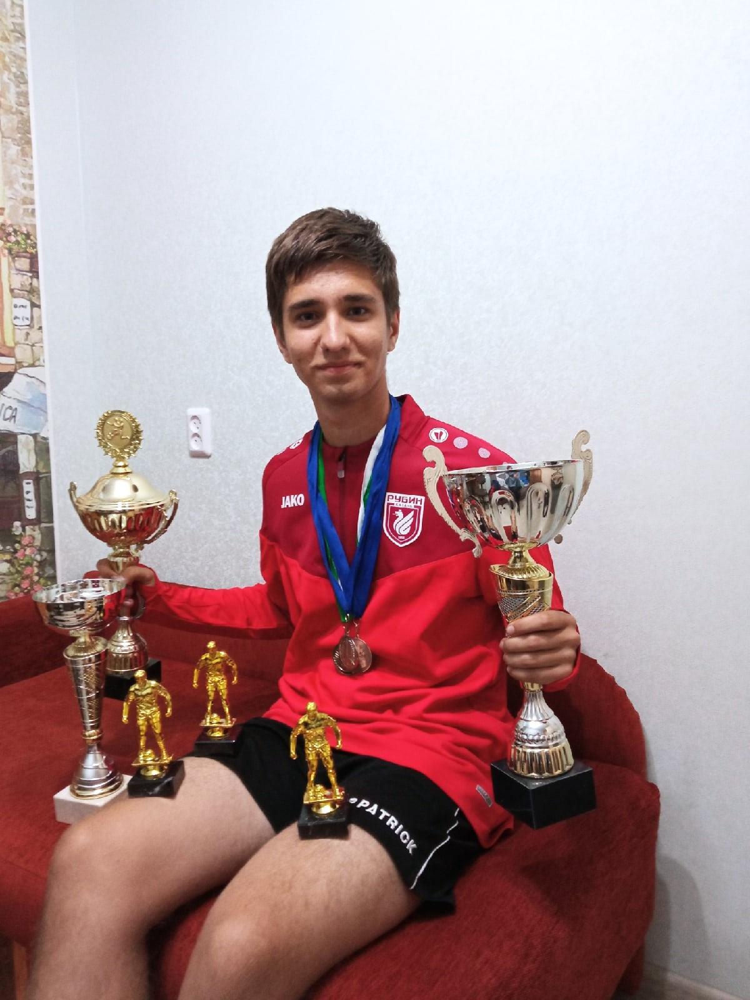

Тренировки и подготовка
Тренировки для меня — это не только способ поддерживать физическую форму, но и важная часть подготовки к играм. Чем больше мы работаем, тем лучше становится наша игра. Я всегда уделяю внимание каждому моменту тренировки, будь то улучшение техники, скорости или тактической подготовки.
Командная работа и успехи
Футбол — это командная игра. На поле важно не только индивидуальное мастерство, но и взаимопонимание с партнерами. Мы с командой часто обсуждаем стратегии, изучаем тактики соперников и стараемся вместе работать над улучшением нашей игры. Я горжусь тем, что могу быть частью такой команды, где каждый член команды работает на общий результат.